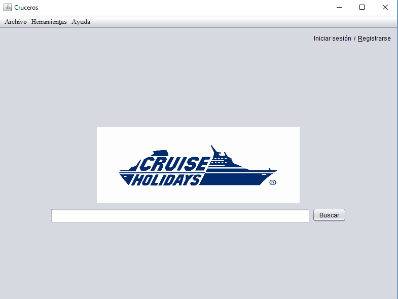

Esta aplicación permite al usuario buscar y reservar cruceros fácilmente.
La pantalla inicial está compuesta por una barra de búsqueda. Para realizar una búsqueda, escriba en el campo central de la pantalla.
